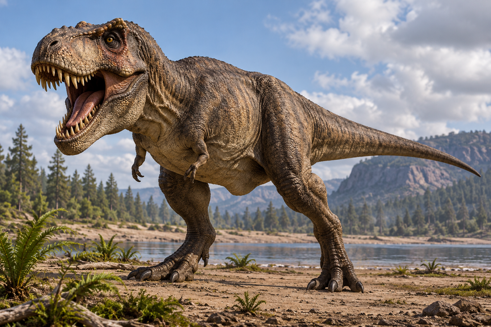
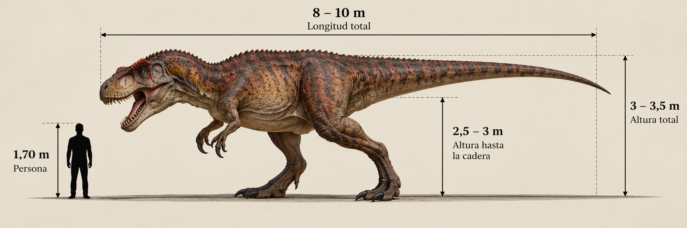

Tyrannosaurus rex

El Tyrannosaurus rex fue uno de los mayores dinosaurios carnívoros terrestres. Vivió durante el Cretácico tardío, hace aproximadamente entre 68 y 66 millones de años, en lo que actualmente es América del Norte. Podía alcanzar unos 12 o 13 metros de longitud y poseía un cráneo enorme, mandíbulas poderosas y dientes adaptados para triturar huesos.
- Grupo: Terópodo.
- Familia: Tyrannosauridae (tiranosáuridos).
- Período: Cretácico tardío (hace 68–66 millones de años).
- Alimentación: Carnívoro.
- Longitud: Hasta aproximadamente 12–13 metros.
- Altura: Aproximadamente 3,5–4 metros hasta la cadera.
- Localización: América del Norte.
